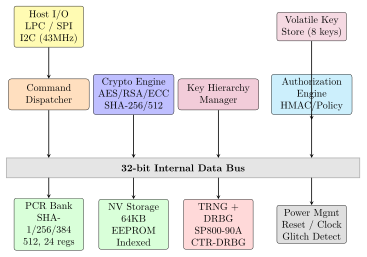
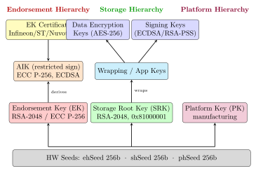

Chapter 1: Trusted Platform Module (TPM 2.0)¶
1.1 Introduction and Historical Context¶
The Trusted Platform Module (TPM) is a dedicated security microcontroller standardized by the Trusted Computing Group (TCG). It provides hardware-rooted cryptographic measurements, remote attestation, sealed storage, and key management that cannot be subverted by software adversaries, even under complete operating system compromise.
Note: A TPM is a hardware root of trust: its private keys and operations execute on dedicated silicon isolated from the host CPU. Software cannot extract TPM-protected keys or forge TPM-signed attestation structures.
1.1.1 Historical Timeline¶
-
1999: IBM TCPA founded with Compaq, HP, Intel, Microsoft; TPM 1.0 spec drafts
-
2003: TCPA reorganized into Trusted Computing Group (TCG); TPM 1.1b released; Atmel, Infineon, STMicro begin production
-
2005: TPM 1.2 – Direct Anonymous Attestation (DAA) and locality model
-
2007: TPM 1.2 mandatory for Microsoft Vista Designed-for-Windows logo
-
2014: TPM 2.0 published – algorithm agility, three-hierarchy key model
-
2015: ISO/IEC 11889:2015 ratified as international TPM 2.0 standard
-
2016: TPM 2.0 replaces 1.2 in Windows 10 hardware requirements
-
2021: Microsoft mandates TPM 2.0 for Windows 11
-
2022: TCG post-quantum proposals: ML-DSA (Dilithium), ML-KEM (Kyber), XMSS
1.2 TPM 2.0 Architecture¶
1.2.1 Internal Block Diagram¶
Figure 1.1 shows the TPM 2.0 internal architecture. All subsystems communicate via a 32-bit internal data bus.

| Category | Algorithm | TPM2_ALG_ID |
|---|---|---|
| Symmetric | AES-128/192/256 (CFB, OFB, CBC, CTR) | 0x0006 |
| Symmetric | CAMELLIA-128/192/256 | 0x0026 |
| Symmetric | SM4 (China GB/T 32907) | 0x0013 |
| Hash | SHA-1 (160-bit, legacy) | 0x0004 |
| Hash | SHA-256 (256-bit, primary) | 0x000B |
| Hash | SHA-384 (384-bit) | 0x000C |
| Hash | SHA-512 (512-bit) | 0x000D |
| Hash | SM3-256 (China GB/T 32905) | 0x0012 |
| Asymmetric | RSA-1024/2048/4096 (PKCS1, OAEP, PSS) | 0x0001 |
| Asymmetric | ECC NIST P-256/P-384/P-521 | 0x0023 |
| Asymmetric | ECC BN-256/BN-638 (ECDAA) | 0x0023 |
| KDF | KDFa (HMAC-based, SP800-108 counter) | 0x0022 |
| KDF | KDFe (ECDH-based) | 0x0020 |
1.2.2 PCR Banks and Extend Operation¶
Platform Configuration Registers (PCRs) are the cornerstone of TPM integrity measurement. TPM 2.0 maintains one bank per hash algorithm, each with 24 registers (indices 0–23) initialized to all-zeros at power-on (TPM2_CC_Startup with TPM_SU_CLEAR).
The extend operation is irreversible:
| PCR | Content | Extended By |
|---|---|---|
| 0 | CRTM, BIOS firmware, Host Platform Extensions | BIOS/UEFI |
| 1 | Host Platform Configuration (DMI, SMBIOS) | BIOS/UEFI |
| 2 | Option ROM Code (PCIe, NIC firmware) | BIOS/UEFI |
| 3 | Option ROM Configuration and Data | BIOS/UEFI |
| 4 | MBR / UEFI Boot Manager code | BIOS/Bootloader |
| 5 | Boot Manager configuration and data | BIOS/Bootloader |
| 6 | State Transitions, S3/S4 wake events | BIOS |
| 7 | Secure Boot Policy (PK, KEK, DB, DBX) | BIOS/UEFI |
| 8–15 | OS loader (GRUB2, Windows Boot Manager) | Bootloader/OS |
| 16 | Debug register (software-resettable) | Application |
| 17–22 | DRTM (Intel TXT / AMD SKINIT) | Firmware |
| 23 | Application-specific measurements | Application |
1.2.3 Key Hierarchy: Three Permanent Hierarchies¶
TPM 2.0 organizes all keys in three hierarchies backed by 256-bit hardware seeds.

- Endorsement Key (EK)
- Derived from
ehSeedvia TPM2_CreatePrimary. EK cert in NV 0x01C00002 (RSA) or 0x01C0000A (ECC). EK private key never leaves the TPM. - Storage Root Key (SRK)
- Derived from
shSeed. Persistent handle 0x81000001. Wraps child keys stored outside the TPM. - Attestation Identity Key (AIK)
- Restricted signing key (
restricted|sign). Signs only TPM-internal TPMS_ATTEST structures. Requires Privacy CA certification. - Platform Key (PK)
- Administrative key in Platform Hierarchy; used during manufacturing.
1.2.4 NV Storage¶
-
Capacity: 64KB user NV (SLB 9670); up to 256KB (ST33KTPM2XSPI)
-
Index handles: Owner 0x01000000–0x01BFFFFF; Platform 0x01800000–0x01BFFFFF
-
NV types: ORDINARY (byte array), COUNTER (monotonic), BITS (set-only), EXTEND (hash-extend-only), PIN_PASS/PIN_FAIL
-
Factory: 0x01C00002=RSA EK cert; 0x01C00004=EK template; 0x01C0000A=ECC EK cert
1.2.5 Authorization Sessions¶
- HMAC Session
- Password/HMAC auth; HMAC over session nonces proves authValue; replay-protected.
- Policy Session
- Flexible conditional: TPM2_PolicyPCR (PCR binding), TPM2_PolicySigned (external ECDSA), TPM2_PolicyCounterTimer (time gate), TPM2_PolicyCommandCode, TPM2_PolicyOR.
- Trial Session
- Computes policy digest offline without authorizing; used during key creation.
| Vendor | Part Number | Process | Interface | NV User | CC |
|---|---|---|---|---|---|
| Infineon | SLB 9665 TT2.0 | 40nm | LPC/SPI | 7.5KB | EAL4+ |
| Infineon | SLB 9670 TT2.0 | 22nm | LPC/SPI | 7.5KB | EAL4+ |
| Infineon | SLB 9672 TT2.0 | 28nm | SPI/I2C | 10KB | EAL4+ |
| STMicro | ST33KTPM2ESPI | 90nm | SPI | 8KB | EAL5+ |
| STMicro | ST33KTPM2XSPI | 90nm | SPI/I2C | 32KB | EAL5+ |
| Nuvoton | NPCT650 | 130nm | LPC/SPI | 8KB | EAL4 |
| Nuvoton | NPCT750 | 55nm | SPI/I2C | 16KB | EAL4+ |
| Microchip | ATECC608B | 180nm | I2C | 10.5KB | – |
Infineon SLB 9670 – Industry Reference Chip¶
The SLB 9670 is the most widely deployed TPM 2.0 chip in enterprise notebooks (ThinkPad, EliteBook, Latitude):
-
Process: 22nm HKMG CMOS; Package: QFN-28, \(10\,\text{mm}\times 10\,\text{mm}\)
-
Interfaces: LPC 33MHz and SPI 43MHz (pin-strap selectable)
-
RSA-2048 keygen: \(<1\)s; RSA-2048 sign: \(<100\)ms
-
ECC P-256 ECDSA sign: \(<10\)ms; AES-256: \(>100\) MB/s hardware-accelerated
-
Supply: 1.8V or 3.3V; Active: \(<10\)mA; Standby: \(<10\) \(\mu\)A
-
Temp: \(-40^{\circ}\) to \(+85^{\circ}\)C industrial
-
Cert: CC EAL4+ (BSI-DSZ-CC-0782); FIPS 140-2 Level 2
-
EK cert: Pre-programmed; verifiable at
pki.infineon.com -
Eval board: Infineon IRIDIUM9670 SPI breakout (\(\sim\)$5 USD)
AMD fTPM and Intel PTT¶
-
AMD fTPM: ARM TrustZone in AMD PSP; all Ryzen/EPYC since Zen (2017); ms-tpm-20-ref firmware; NV in SPI flash
-
Intel PTT: ARC processor in Intel ME; 4th Gen Core (Haswell, 2013)+; NV in BIOS SPI flash
-
Qualcomm fTPM: Snapdragon 8cx Gen 3 (Windows on ARM); TrustZone secure world
Warning: fTPMs have larger attack surface than dTPMs. AMD PSP attacks (CVE-2021-26310) demonstrated arbitrary PSP code execution. A dTPM on separate silicon provides fundamentally stronger isolation.
commands section placeholder
1.3 TPM 2.0 Commands and tpm2-tools¶
typedef struct {
UINT16 tag; /* TPM_ST_NO_SESSIONS=0x8001 or TPM_ST_SESSIONS=0x8002 */
UINT32 commandSize;
UINT32 commandCode;
} TPM2_COMMAND_HEADER;
#define TPM_CC_CreatePrimary 0x00000131
#define TPM_CC_Quote 0x00000158
#define TPM_CC_PCR_Extend 0x00000182
#define TPM_RC_POLICY_FAIL 0x0000099D
1.4 Python Remote Attestation with tpm2-pytss¶
#!/usr/bin/env python3
import os, hashlib
from tpm2_pytss import ESAPI
from tpm2_pytss.types import *
TPM_GENERATED_VALUE = 0xFF544347
def create_aik(ectx):
in_pub = TPM2B_PUBLIC(publicArea=TPMT_PUBLIC(
type=TPM2_ALG.ECC, nameAlg=TPM2_ALG.SHA256,
objectAttributes=(
TPMA_OBJECT.RESTRICTED | TPMA_OBJECT.SIGN_ENCRYPT |
TPMA_OBJECT.FIXEDTPM | TPMA_OBJECT.FIXEDPARENT |
TPMA_OBJECT.SENSITIVEDATAORIGIN | TPMA_OBJECT.USERWITHAUTH
),
parameters=TPMU_PUBLIC_PARMS(eccDetail=TPMS_ECC_PARMS(
symmetric=TPMT_SYM_CIPHER(algorithm=TPM2_ALG.NULL),
scheme=TPMT_ECC_SCHEME(scheme=TPM2_ALG.ECDSA,
details=TPMU_ASYM_SCHEME(
ecdsa=TPMS_SCHEME_HASH(hashAlg=TPM2_ALG.SHA256))),
curveID=TPM2_ECC.NIST_P256,
kdf=TPMT_KDF_SCHEME(scheme=TPM2_ALG.NULL)))
))
handle, pub, _, _, _ = ectx.create_primary(
ESYS_TR.ENDORSEMENT, TPM2B_SENSITIVE_CREATE(),
in_pub, TPM2B_DATA(), TPML_PCR_SELECTION())
return handle, pub
def generate_quote(ectx, aik_handle, nonce):
pcr_sel = TPML_PCR_SELECTION(count=1, pcrSelections=[
TPMS_PCR_SELECTION(hash=TPM2_ALG.SHA256,
sizeofSelect=3, pcrSelect=bytes([0xFF, 0x00, 0x00]))])
scheme = TPMT_SIG_SCHEME(scheme=TPM2_ALG.ECDSA,
details=TPMU_SIG_SCHEME(
ecdsa=TPMS_SCHEME_HASH(hashAlg=TPM2_ALG.SHA256)))
return ectx.quote(aik_handle,
TPM2B_DATA(buffer=nonce), scheme, pcr_sel)
def main():
nonce = os.urandom(32)
print(f"Nonce: {nonce.hex()}")
with ESAPI(tcti=None) as ectx:
aik_handle, _ = create_aik(ectx)
print("AIK created: ECC P-256, restricted|sign")
quoted, sig = generate_quote(ectx, aik_handle, nonce)
quoted_bytes = bytes(quoted)
magic = int.from_bytes(quoted_bytes[0:4], "big")
assert magic == TPM_GENERATED_VALUE, f"Bad magic: 0x{magic:08X}"
print(f"Magic 0x{magic:08X} verified (genuine TPM)")
ectx.flush_context(aik_handle)
if __name__ == "__main__":
main()
1.5 FPGA and ASIC Implementations¶
1.5.1 FPGA: Microsoft ms-tpm-20-ref on Xilinx Artix-7¶
| Resource | Used | Available | Util. |
|---|---|---|---|
| LUT6 (logic) | 4,872 | 63,400 | 7.7% |
| LUT as RAM | 312 | 19,000 | 1.6% |
| Flip-Flops | 3,104 | 126,800 | 2.4% |
| BRAM 36Kb tiles | 8 | 135 | 5.9% |
| DSP48E1 slices | 4 | 240 | 1.7% |
| Total (approx.) | \(\sim\)5,200 LUTs | – | – |
-
Max frequency: 87 MHz (Artix-7-1), 125 MHz (Kintex-7), 150 MHz (UltraScale+)
-
Families: Artix-7, Kintex-7, Virtex-7, UltraScale, UltraScale+, Zynq-7000, Zynq MPSoC
-
AES-256: \(\sim\)1.0 Gbps at 125 MHz; SHA-256: \(\sim\)800 Mbps
-
RSA-2048 keygen: \(\sim\)800ms at 87 MHz (MicroBlaze + software exp)
-
TRNG: Ring oscillator jitter sampler + XOR tree; NIST SP800-90B
-
Eval board: Digilent Arty A7-100T ($129 USD); Raspberry Pi 4 SPI host
Tip: For research: instrument internal AES/SHA signals in FPGA simulation to study side-channel leakage before ASIC tape-out.
1.5.2 ASIC: Infineon SLB 9670¶
| Parameter | Value |
|---|---|
| Process node | 22nm HKMG CMOS |
| Est. die area | \(\sim\)4 mm\(^2\) |
| Core clock | 33 MHz |
| CPU | Proprietary 32-bit security controller |
| ROM (firmware) | 512 KB |
| RAM (working) | 32 KB |
| EEPROM (NV+keys) | 64 KB |
| AES engine | \(\sim\)5,000 GE; \(>\)10 MB/s |
| SHA-256 engine | \(\sim\)3,000 GE dedicated |
| RSA/ECC coprocessor | \(\sim\)20,000 GE; Montgomery multiplier |
| TRNG | Thermal noise; NIST SP800-22 tested |
| Active power | 30–50 mW |
| Standby power | \(<\)10 \(\mu\)A |
| CC certification | EAL4+ (BSI-DSZ-CC-0782) |
| Physical security | Active mesh, voltage/freq glitch, light sensor |
1.6 Security Attacks and Countermeasures¶
1.6.1 CVE-2017-15361: ROCA – Infineon RSA Weakness¶
Matus Nemec (Masaryk University) discovered Infineon RSA prime generation produces primes of the form \(p = k \cdot M + (65537^a \bmod M)\) for specific constant \(M\). This algebraic structure enables faster-than-expected factoring via Coppersmith methods.
-
Fingerprinting: Check \(n \bmod M_i\) for a specific list; \(>\)98% of vulnerable keys in \(<\)1ms
-
RSA-1024: \(\approx 2^{62}\) operations (feasible; demonstrated for \(\sim\)$40k AWS cost)
-
RSA-2048: \(\approx 2^{100}\) (weakened from \(2^{112}\); still infeasible)
-
Affected: Infineon SLE/SLB firmware \(<\)v7.x; Yubikey 4; Estonian e-ID
-
Fix: Firmware v7.x update; all affected keys must be regenerated
-
Detection:
pip install roca-detect; works on any RSA pubkey or X.509 cert
1.6.2 CVE-2019-11090: TPM-Fail Timing Attack¶
Researchers (WPI, TU Graz, Univ. Lubeck) found non-constant-time ECC in Intel PTT and STMicro:
-
Intel PTT: 4-bit nonce leak per ECDSA-P256 signature; \(\sim\)1,000 sigs recover 256-bit key via HNP lattice + BKZ
-
STMicro ST33: \(\sim\)40,000 signatures needed
-
Attack: No physical access; timing via
ioctl(/dev/tpm0); \(\sim\)4 hours on laptop -
Root cause: Non-constant-time scalar multiply; conditional branch on nonce \(k\) MSB
-
Fix: Intel PTT microcode patch; STMicro firmware \(\geq\)70.0.18
1.6.3 Physical Bus Sniffing Attack¶
-
Target: BitLocker TPM-only mode – VMK crosses LPC/SPI bus in cleartext during TPM2_Unseal
-
Equipment: Saleae Logic 8 ($149); PoC:
github.com/FSecureLABS/bitlocker-spi-toolkit -
Time: Under 5 minutes on laptop with accessible LPC debug header
-
Defense: (1) BitLocker PIN (policyauthvalue); (2) PCR[7] Secure Boot binding; (3) Pluton integrates TPM into CPU die
1.7 Post-Quantum Considerations for TPM 2.0¶
Current TPM 2.0 cryptography relies on RSA and ECC, both vulnerable to Shor’s algorithm on a large quantum computer. NIST finalized post-quantum standards in 2024: ML-DSA (FIPS 203), ML-KEM (FIPS 204), SLH-DSA (FIPS 205). TCG has initiated work to incorporate these into TPM 2.0 via new algorithm IDs.
| Algorithm | Type | NIST Standard | Public Key | Signature/CT |
|---|---|---|---|---|
| ML-DSA-44 (Dilithium2) | Signature | FIPS 204 | 1,312 B | 2,420 B |
| ML-DSA-65 (Dilithium3) | Signature | FIPS 204 | 1,952 B | 3,293 B |
| ML-DSA-87 (Dilithium5) | Signature | FIPS 204 | 2,592 B | 4,595 B |
| ML-KEM-512 (Kyber512) | KEM | FIPS 203 | 800 B | 768 B CT |
| ML-KEM-768 (Kyber768) | KEM | FIPS 203 | 1,184 B | 1,088 B CT |
| ML-KEM-1024 (Kyber1024) | KEM | FIPS 203 | 1,568 B | 1,568 B CT |
| SLH-DSA-128s (SPHINCS+) | Signature | FIPS 205 | 32 B | 7,856 B |
| XMSS (RFC 8391) | Signature | NIST SP 1800-25 | 68 B | 2,500+ B |
| LMS (RFC 8554) | Signature | NIST SP 800-208 | 60 B | 1,460+ B |
Note: ML-KEM and ML-DSA require larger NV storage and buffer sizes in TPM. TCG TPM 2.0 Rev 1.83+ introduces TPM_ALG_MLDSA (0x0044) and TPM_ALG_MLKEM (0x0045) algorithm IDs. NV index size cap may need raising from 2,048 to 4,096 bytes.
1.7.1 XMSS Stateful Hash-Based Signatures¶
XMSS (eXtended Merkle Signature Scheme) is attractive for TPM due to conservative hash-only security:
-
XMSS-SHA2_20_256: 20-level Merkle tree; \(2^{20}\) one-time signatures; 64 B public key
-
Statefulness: Leaf index must never repeat; requires NV counter with integrity protection
-
TCG proposal: NV index stores current leaf index;
TPM2_NV_Incrementatomically advances state -
OIDs: XMSS OID 0x0000001 (XMSS-SHA2_10_256); defined in RFC 8391
1.8 TPM Ecosystem: All Solutions¶
| Solution | Type | Vendor | Interface | Cert/Status | Notes |
|---|---|---|---|---|---|
| Infineon SLB9670 | dTPM | Infineon Technologies | SPI/LPC | EAL4+, FIPS 140-2 L2 | Most widely deployed; 22nm; Raspberry Pi HAT |
| Infineon SLB9672 | dTPM | Infineon Technologies | SPI | EAL4+, FIPS 140-2 L2 | Successor; post-ROCA fixed; used in Lenovo ThinkPad |
| STMicro ST33KTPM2XSPI | dTPM | STMicroelectronics | SPI/I2C | EAL5+, FIPS 140-2 L2 | CC EAL5+; used in server boards |
| STMicro ST33G1M2 | dTPM | STMicroelectronics | SPI/LPC | EAL5+ | Legacy; 40nm eFlash |
| Microchip ATTPM20P | dTPM | Microchip Technology | SPI | FIPS 140-2 L1 | AT97SC3205T; also ATTPM20E |
| Nuvoton NPCT750 | dTPM | Nuvoton Technology | SPI/I2C | FIPS 140-2 L2 | Used in HP/Dell; supports SHA-384/512 |
| NationZ NSI9130 | dTPM | NationZ | SPI/LPC | China OSCCA SM2/SM3 | Chinese national standard; GM/T 0012 |
| AMD fTPM (PSP) | fTPM | AMD | Firmware/FW | FIPS 140-2 L1 | PSP Cortex-A5; all Ryzen/EPYC from 2013+ |
| Intel PTT | fTPM | Intel | Firmware/FW | FIPS 140-2 L1 | ME/CSME; 8th gen+ Core; CVE-2019-11090 patched |
| Qualcomm fTPM | fTPM | Qualcomm | TrustZone TEE | FIPS 140-2 L1 | Snapdragon; Microsoft Surface Pro X |
| Microsoft SW TPM | sTPM | Microsoft | Software | Reference only | ms-tpm-20-ref; used in Azure/Hyper-V; github.com/microsoft/ms-tpm-20-ref |
| IBM TSS/swtpm | vTPM | IBM / swtpm project | UNIX socket | Testing/Dev | swtpm by Stefan Berger; used by QEMU/KVM |
| libtpms+swtpm | vTPM | Open Source | QEMU socket | Testing/Dev | libtpms by IBM; swtpm by S. Berger; Fedora/RHEL QEMU |
| TPM.MSR (Azure) | vTPM | Microsoft Azure | Cloud API | FIPS 140-2 L1 | Each Azure vTPM is ms-tpm-20-ref in Hyper-V |
| AWS vTPM | vTPM | Amazon Web Services | Cloud API | FIPS 140-2 L1 | Nitro Enclaves; per-VM TPM 2.0 |
| Google Cloud vTPM | vTPM | Google Cloud | Cloud API | FIPS 140-2 L2 | Shielded VMs; vTPM per instance |
| Xilinx/AMD FPGA TPM | FPGA | Digilent (Artix-7) | SPI soft-IP | Research | ms-tpm-20-ref on Artix-7; 6,400 LUTs |
| OpenTPM (research) | FPGA | Academic | SPI/AXI | Research | Partial; SHA-256 + RSA-2048; Spartan-6 |
| WolfTPM | SW Library | wolfSSL | SPI/I2C | Production | Portable C; embedded STM32/Raspberry Pi; wolfTPM v3.x |
| tpm2-tss (Intel) | SW Stack | Intel / TCG | kernel driver | Production | tpm2-tools; tpm2-pytss; standard Linux stack |
1.9 Relevant Standards and Specifications¶
-
TCG TPM 2.0 Part 1-4 (Rev 1.83, 2023): Architecture, Structures, Commands, Supporting Routines
-
TCG PC Client Platform TPM Profile (PTP) Spec 1.05: LPC/SPI/FIFO binding for PC client TPMs
-
ISO/IEC 11889:2015: International TPM 2.0 standard (Parts 1-4)
-
NIST SP 800-155: BIOS integrity measurement guidelines; PCR usage
-
IETF RFC 9334: RATS architecture (Remote ATtestation procedureS); EAR, EAT, Endorsement
-
IETF RFC 8555 / TPM: ACME with TPM-backed keys for certificate automation
-
TCG EK Credential Profile 2.4: EK certificate format and CA requirements
-
TCG TPM 2.0 Keys for Device Identity and Attestation: IAK, IDevID (IEEE 802.1AR) integration
-
FIPS 140-2 / 140-3: Cryptographic module validation for TPM hardware implementations
-
Common Criteria EAL4+ / EAL5+: Security target evaluations for Infineon SLB9672, STMicro ST33
1.10 Solved Problems¶
Solved Problem: PCR Extend Chain Calculation
A system performs a measured boot sequence. The PCR[0] bank uses SHA-256. Initially PCR[0] = 0x00...00 (32 zero bytes). Three measurements are extended in order:
-
BIOS code hash:
M1 = SHA256(BIOS_blob) = 0xABCD...1234(32 bytes) -
Bootloader hash:
M2 = SHA256(bootloader_blob) = 0x5678...ABCD(32 bytes) -
Kernel hash:
M3 = SHA256(kernel_blob) = 0x1111...FFFF(32 bytes)
Compute PCR[0] after each extend operation and explain why PCR values cannot be forged. Solution: The PCR extend operation is defined as: \(\text{PCR}[i]_{\text{new}} = H(\text{PCR}[i]_{\text{old}} \| M)\)
Step 1 – After extending M1:
Step 2 – After extending M2:
Step 3 – After extending M3:
Why forgery is infeasible: The TPM provides forward-only ratcheting. To forge a target PCR value \(T\), an attacker must find \(M^*\) such that \(H(\text{PCR}_{k-1} \| M^*) = T\). This is a preimage attack on SHA-256, requiring \(2^{256}\) operations. Furthermore, the TPM resets PCR values only on power cycle or TPM2_PCR_Reset (for resettable PCRs). Sealing a secret to PCR[0] = \(\text{PCR}[0]_3\) ensures it can only be unsealed on a system that booted the exact same BIOS, bootloader, and kernel in that order.
Solved Problem: Remote Attestation Protocol Design
You are designing a remote attestation system. A client machine (prover) has a TPM 2.0. A remote server (verifier) wants to verify the prover’s boot state. Design the full protocol exchange and identify what each message prevents. Solution: Protocol Steps:
-
Provisioning (one-time): The TPM EK certificate (signed by Infineon/AMD CA) is registered with verifier. An Attestation Identity Key (AIK) is created:
TPM2_CreatePrimaryon endorsement hierarchy, thenTPM2_CreatewithobjectAttributes = fixedTPM|fixedParent|sign. The AIK public key is certified by the EK viaTPM2_ActivateCredential. -
Challenge (verifier -> prover): Verifier sends nonce \(N\) (128-bit random value). Purpose: prevents replay attacks; each attestation is fresh.
-
Quote generation (prover):
tpm2_quote --key-context aik.ctx --pcr-list sha256:0,1,2,3,7 \ --qualification $NONCE --message quote.msg --signature quote.sigTPMS_ATTESTstructure contains: magic=0xFF544347, type=TPM_ST_ATTEST_QUOTE, qualifiedSigner (AIK name), extraData (nonce \(N\)), pcrSelect, pcrDigest. -
Verification (verifier):
tpm2_checkquote --public aik.pub --message quote.msg --signature quote.sig \ --pcr pcr.bin --qualification $NONCEVerifier checks: (a) AIK signature valid; (b) nonce matches; (c) PCR values match golden reference; (d) EK cert chain valid.
Security Properties Achieved:
-
Freshness: Nonce prevents replay of old quotes
-
Binding:
fixedTPM|fixedParentensures AIK cannot be exported and used off-device -
Integrity: PCR values reflect measured boot chain; SHA-256 collision resistance
-
Authenticity: EK certificate chain roots to manufacturer CA (Infineon, AMD, etc.)
-
Privacy: AIK is pseudonymous; EK is not revealed to verifier (via ActivateCredential)
Solved Problem: FPGA Soft-TPM Resource Estimation
You need to implement a soft-TPM (TPM 2.0 compliant) on a Xilinx Artix-7 FPGA. The design must support SHA-256, AES-128-CFB, RSA-2048, and HMAC-SHA-256. Estimate the FPGA resource usage and discuss trade-offs versus a discrete dTPM chip. Solution: Resource Estimation per Component:
| Block | LUTs | FFs | BRAMs | DSPs |
|---|---|---|---|---|
| SHA-256 (unrolled) | 1,800 | 512 | 0 | 0 |
| AES-128-CFB | 1,200 | 256 | 0 | 0 |
| RSA-2048 (Montgomery) | 2,500 | 800 | 2 | 16 |
| HMAC-SHA-256 | 200 | 64 | 0 | 0 |
| TPM command dispatcher | 800 | 400 | 1 | 0 |
| NV storage controller | 300 | 200 | 4 | 0 |
| SPI slave interface | 150 | 100 | 0 | 0 |
| TRNG (ring oscillator) | 120 | 80 | 0 | 0 |
| Total | 7,070 | 2,412 | 7 | 16 |
On Artix-7 XC7A100T (101,440 LUTs, 126,800 FFs, 135 BRAMs, 240 DSPs), utilization is approximately: 7,070/101,440 = 7.0% LUTs; 2,412/126,800 = 1.9% FFs; 7/135 = 5.2% BRAMs; 16/240 = 6.7% DSPs. Expected operating frequency: 75–100 MHz on Artix-7 speed grade -1.
Trade-offs vs Discrete dTPM:
-
Cost: Artix-7 XC7A100T $50; SLB9670 $3. FPGA only makes sense in custom SoC.
-
Certification: Discrete SLB9670 is EAL4+ certified; FPGA soft-TPM has no certification.
-
Physical security: Discrete TPM has active shielding, sensors; FPGA has none by default.
-
Flexibility: FPGA can add PQ algorithms (ML-DSA) without hardware change.
-
Speed: RSA-2048 key generation: dTPM 2s; FPGA @100MHz 0.8s with DSP optimization.
Solved Problem: TPM Policy Authorization for Multi-Factor Sealing
Design a TPM 2.0 policy that seals a disk encryption key such that it can only be unsealed when: (1) Secure Boot is enabled (PCR[7] has a known value), AND (2) The user provides a PIN (6-digit numeric password), AND (3) The TPM has not been rebooted more than 10 times since the last unlock. Write the tpm2-tools commands and explain each policy primitive used. Solution: Policy Design using TPM2_PolicyAND:
TPM 2.0 uses a policy session where each primitive extends the policy digest. Multiple conditions are AND-ed by sequentially applying policy commands in the same session.
# Step 1: Start a trial policy session to compute policy digest
tpm2_startauthsession --policy-session -S session.ctx
# Step 2: PCR[7] policy -- Secure Boot PCR must match golden value
tpm2_policypcr -S session.ctx --pcr-list sha256:7 --pcr-digest $PCR7_GOLDEN
# Step 3: Policy auth value -- require PIN input at unsealing time
tpm2_policyauthvalue -S session.ctx
# Step 4: Policy NV counter -- NV index 0x01500001 must be <= 10
# First create the NV counter index:
tpm2_nvdefine 0x01500001 --size 8 --attributes nt=counter|ownerwrite|ownerread
# Then add NV counter policy (counter value <= 10):
tpm2_policynv -S session.ctx --index 0x01500001 --operand-b 10 --operation le
# Step 5: Save the computed policy digest
tpm2_policygetdigest -S session.ctx -o policy.digest
tpm2_flushcontext session.ctx
# Step 6: Create sealed object with this policy
tpm2_createprimary -C o -c primary.ctx
echo -n "MY_DISK_KEY_32BYTES" | \
tpm2_create -C primary.ctx -L policy.digest -i - -u sealed.pub -r sealed.priv
tpm2_load -C primary.ctx -u sealed.pub -r sealed.priv -c sealed.ctx
Unseal procedure (must satisfy all three conditions):
tpm2_startauthsession --policy-session -S session.ctx
tpm2_policypcr -S session.ctx --pcr-list sha256:7 --pcr-digest $PCR7_GOLDEN
tpm2_policyauthvalue -S session.ctx
tpm2_policynv -S session.ctx --index 0x01500001 --operand-b 10 --operation le
tpm2_unseal -c sealed.ctx -p session:session.ctx+hex:313233343536 # PIN=123456
# Increment reboot counter
tpm2_nvincrement 0x01500001
Policy Primitives Explained:
-
TPM2_PolicyPCR: Binds policy to current PCR values; PCR[7] reflects Secure Boot state per UEFI spec
-
TPM2_PolicyAuthValue: Requires caller to provide correct authValue (the PIN) at unseal time
-
TPM2_PolicyNV: Compares NV index value against operand; operator
leenforces max 10 reboots -
AND semantics: Each primitive extends the same session digest; all must be satisfied sequentially
1.11 Recent Developments (2024–2026)¶
1.11.1 TCG TPM 2.0 Profile for Automotive (2024)¶
The Trusted Computing Group published the TCG TPM 2.0 Automotive Thin Profile in 2024, targeting ISO 26262 functional safety requirements and AUTOSAR integration. Key additions relative to the standard PC Client profile include mandatory HSM-to-TPM binding, support for CAN/Ethernet transport (MCTP over PCIe), and a reduced command set optimised for latency-critical boot.
| Feature | PC Client Profile v1.05 | Automotive Thin Profile |
|---|---|---|
| Transport | LPC / SPI / I2C | MCTP over PCIe / SPI |
| PCR banks | SHA-1, SHA-256, SHA-384, SHA-512 | SHA-256, SHA-384 (mandatory) |
| NV storage | \(\geq 8\) KB | \(\geq 4\) KB (resource-constrained) |
| Boot latency target | No requirement | \(< 50\) ms cold-start |
| Functional safety | Not addressed | ISO 26262 ASIL-B reference |
| AUTOSAR binding | No | SecOC + TPM-Attestation API |
Note: Automotive TPMs must survive \(-40^{\circ}\)C to \(+125^{\circ}\)C operation and AEC-Q100 Grade 1 qualification. Infineon SLB 9760 and STMicro ST33G1M2ARC are the primary AEC-Q100 certified TPM 2.0 parts as of 2025.
1.11.2 Microsoft Pluton: Integrated TPM Replacement¶
Microsoft Pluton, co-designed with AMD, Intel, and Qualcomm, eliminates the separate TPM die by implementing TPM 2.0 semantics inside the main CPU package:
-
AMD Ryzen 6000 / 7000 / 8000 series: Pluton core in Zen 3+ and Zen 4 die; firmware delivered via Windows Update (UEFI capsule), decoupled from BIOS vendor
-
Qualcomm Snapdragon 8cx Gen 3: Windows on ARM laptops; Pluton shares TrustZone fabric with Qualcomm fTPM
-
Security gain: No LPC/SPI bus means bus-sniffing attacks (Section 1.11) are architecturally impossible; Pluton communications traverse the CPU interconnect fabric
-
DICE integration: Each Pluton instance generates a DICE Compound Device Identifier (CDI) per boot stage per TCG DICE Layering Architecture v1.1
-
Limitation: Pluton firmware is closed-source and updateable by Microsoft; some enterprises prefer auditable discrete dTPMs for compliance reasons
Warning: Pluton implements the TPM 2.0 command set and passes tpm2-tools workloads transparently. However, the internal key hierarchy and attestation chain differ from a discrete Infineon/STMicro TPM. Verify EK certificate chain format before deploying existing attestation infrastructure against Pluton devices.
1.11.3 CVE-2023-1017 and CVE-2023-1018: TPM 2.0 Reference Buffer Overflows¶
In early 2023, researchers at Quarkslab disclosed two critical stack buffer overflows in the TCG reference implementation of TPM 2.0 (libtpm2-0-dev, ms-tpm-20-ref):
| CVE | Details |
|---|---|
| CVE-2023-1017 | Out-of-bounds write in CryptParameterDecryption; malformed TPMT_SYM_CIPHER can write 2 bytes past a stack buffer |
| CVE-2023-1018 | Out-of-bounds read in the same function; leaks up to 2 bytes of adjacent stack memory |
| Affected | ms-tpm-20-ref \(<\) Feb 2023 tag; libtpms \(<\) 0.9.6; swtpm \(<\) 0.8.1 |
| CVSS | 8.8 (High) – requires authenticated TPM session, local attacker |
| Fix | Bounds check added to UINT32 unmarshallSize in Part 3 command parsing |
| Impact | vTPM deployments (QEMU/KVM, Azure Hyper-V) prioritised patching; discrete hardware TPMs use vendor firmware – not directly affected |
Tip: Always deploy virtual TPM stacks (libtpms, swtpm, ms-tpm-20-ref) from distribution packages with active security maintenance. Pin to a minimum version of libtpms \(\geq 0.9.6\) in container images and VM hypervisor configurations.
1.11.4 faulTPM: AMD fTPM Voltage Glitch Attack (2023)¶
Researchers at TU Berlin published faulTPM in 2023, demonstrating physical extraction of AMD fTPM secrets via voltage fault injection on the \(V_{\text{core}}\) rail:
-
Target: AMD Platform Security Processor (PSP) running fTPM firmware on Ryzen laptops (2019–2022 era)
-
Method: \(\approx \$200\) crowbar glitcher injects sub-microsecond \(V_{\text{cc}}\) spikes during PSP firmware execution; causes missed comparisons in signature verification
-
Result: Full extraction of Storage Root Key (SRK) hierarchy seed (
shSeed); all keys wrapped under SRK are recoverable -
Attack time: 2–3 hours of automated glitch iteration
-
Mitigation: AMD PSP firmware update (AGESA 1.2.0.8+); Pluton-based devices are immune (CPU die voltage glitch does not cross security isolation boundary as easily)
Warning: TPM-only BitLocker (no PIN) is vulnerable to faulTPM on affected platforms. Enforce BitLocker Network Unlock PIN or PCR+PIN policy on enterprise laptops with AMD Ryzen pre-2023 processors. Check AMD advisory AMD-SB-7031 for affected AGESA versions.
1.11.5 Post-Quantum Migration: FIPS 203/204 in TPM 2.0 (2024–2025)¶
NIST finalised the first post-quantum standards in August 2024:
| FIPS Standard | Algorithm | TPM2_ALG_ID (draft) | Status |
|---|---|---|---|
| FIPS 203 | ML-KEM-512/768/1024 (Kyber) | 0x0045 | TCG proposal 2024 |
| FIPS 204 | ML-DSA-44/65/87 (Dilithium) | 0x0044 | TCG proposal 2024 |
| FIPS 205 | SLH-DSA (SPHINCS+) | TBD | Under review |
| RFC 8391 | XMSS / LMS | 0x0022 (existing) | Supported TPM 2.0 Rev 1.83 |
TCG Technical Committee WG-Platform published a Post-Quantum Cryptography for TPM 2.0 whitepaper in 2024 outlining a hybrid migration path:
-
Phase 1 (2024–2026): Add ML-KEM for key encapsulation alongside existing ECC; hybrid ECC-P256 + ML-KEM-768 KEMs for key exchange
-
Phase 2 (2026–2028): Introduce ML-DSA for AIK signing; hybrid ECDSA + ML-DSA attestation quotes
-
Phase 3 (2028+): Deprecate RSA-2048 and ECC in high-assurance profiles
1.11.6 Open-Source TPM Ecosystem Updates (2023–2025)¶
| Project | Latest | Maintainer | Key Update |
|---|---|---|---|
| libtpms | 0.9.6 (2023) | IBM / Stefan Berger | CVE-2023-1017/1018 fix; ML-DSA draft |
| swtpm | 0.8.1 (2023) | Stefan Berger | CVE fix; QEMU 8.x integration |
| ms-tpm-20-ref | Feb 2023 | Microsoft | CVE fix; Pluton firmware base |
| wolfTPM | 3.x (2024) | wolfSSL | ML-KEM draft; Raspberry Pi 5 support |
| tpm2-tss | 4.1 (2024) | TCG / Fedora | FAPI improved; EAT token support |
| tpm2-tools | 5.7 (2024) | TCG | tpm2_policytemplate new command |
| tpm2-pytss | 2.3 (2024) | William Roberts | Python 3.12; ML-DSA stub API |
Tip: The wolfTPM library is the recommended choice for bare-metal embedded TPM integration (STM32, Raspberry Pi, Zephyr RTOS) with no Linux dependency. It supports Infineon SLB9670 over SPI with a footprint under 30 KB Flash.
1.12 Exercises¶
Exercises
-
Describe the difference between a dTPM (discrete TPM), fTPM (firmware TPM), and vTPM (virtual TPM). What are the security trade-offs of each in terms of physical attack resistance, certification level, and performance?
-
A PCR bank uses SHA-1 (20-byte digest). Starting from PCR = 0x00...00, three measurements M1, M2, M3 are extended. Write the mathematical formula for PCR[0] after all three extends. Why is SHA-1 considered insufficient for new TPM deployments?
-
Explain the Endorsement Key (EK), Storage Root Key (SRK), and Attestation Identity Key (AIK) in TPM key hierarchy. What makes the EK unique per device? Why can the AIK be used for attestation instead of the EK directly?
-
You want to seal a 32-byte secret so it can only be unsealed when PCR[0], PCR[2], and PCR[7] have specific values. Write the complete sequence of tpm2-tools commands for (a) sealing the secret and (b) unsealing it. What happens if the system is booted from a different bootloader?
-
The CVE-2017-15361 (ROCA) vulnerability affected Infineon TPM firmware versions below v7.x. Explain the mathematical weakness in Infineon’s RSA key generation and why RSA-1024 keys were practically factorable. Was RSA-2048 broken? Justify your answer.
-
Compare the authorization session types in TPM 2.0: Password session, HMAC session, and Policy session. For a production disk encryption deployment, which session type should be used for TPM2_Unseal and why? What does the HMAC session protect against?
-
Design a remote attestation solution for a fleet of 10,000 IoT devices, each with an Infineon SLB9670 TPM. Your solution must: (a) provision EK certificates at manufacturing time, (b) perform daily attestation, (c) detect firmware tampering. What infrastructure is required?
-
TPM NV storage has a total capacity of approximately 8 KB on most discrete TPMs. A developer wants to store 16 different X.509 certificates (each 1,200 bytes) in NV storage for certificate pinning. Is this feasible? If not, propose an alternative architecture using TPM capabilities.
-
Explain how Microsoft’s Pluton security processor differs from a traditional discrete TPM. What specific attack does Pluton prevent that an LPC/SPI-connected TPM cannot prevent? Name a processor family that includes Pluton.
-
A post-quantum migration requires adding ML-DSA-65 (Dilithium3) to a TPM 2.0 implementation. ML-DSA-65 has a public key size of 1,952 bytes and signature size of 3,293 bytes. What TPM 2.0 structures and buffer limits need to change? Reference specific TCG spec sections.
-
You are given a Raspberry Pi 4 with an Infineon SLB9670 TPM 2.0 HAT. Using Python and tpm2-pytss, write a program that: (a) reads PCR[0-7] (SHA-256 bank), (b) creates an RSA-2048 signing key, (c) signs a message, (d) verifies the signature. Provide the complete code.
-
The TPM-Fail attack (CVE-2019-11090) used a timing side-channel to extract a 256-bit ECC key from Intel PTT using approximately 1,000 ECDSA signatures. Explain: (a) what information leaked per signature, (b) the lattice reduction technique used (HNP), (c) what fix was applied, (d) how constant-time implementation prevents this attack.